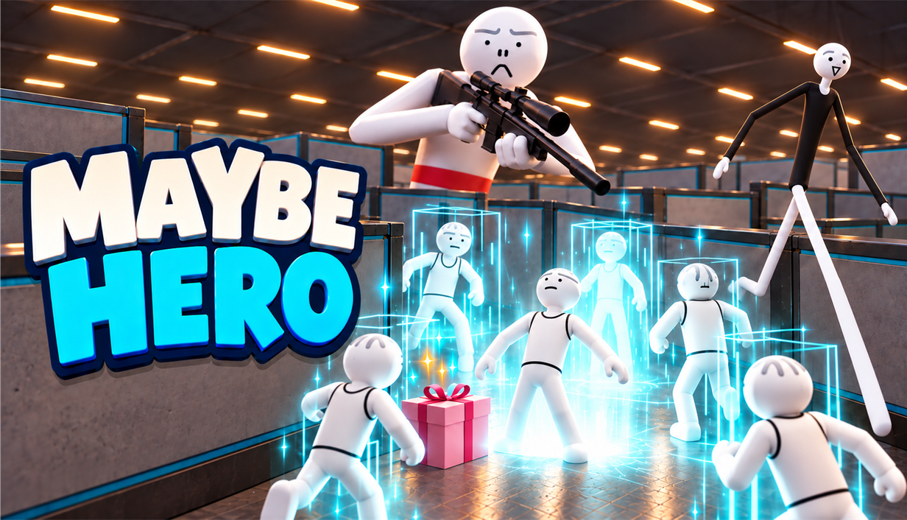
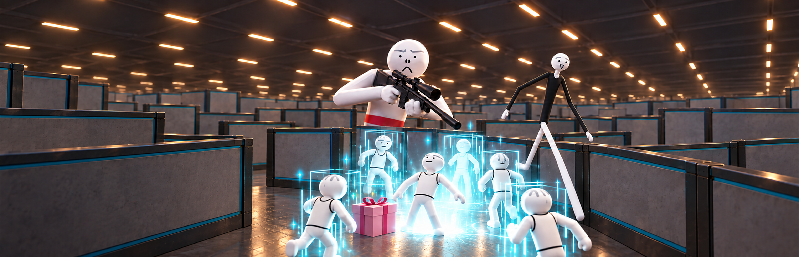
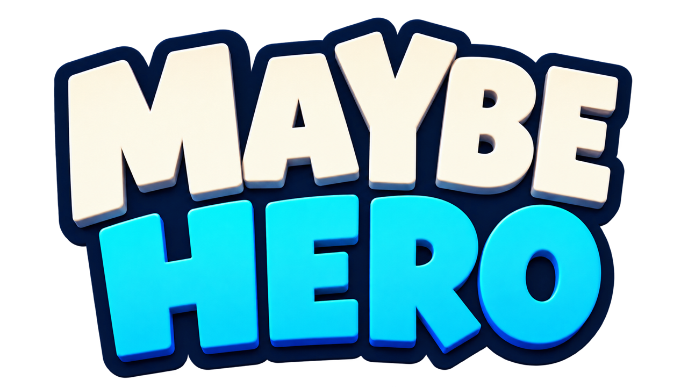
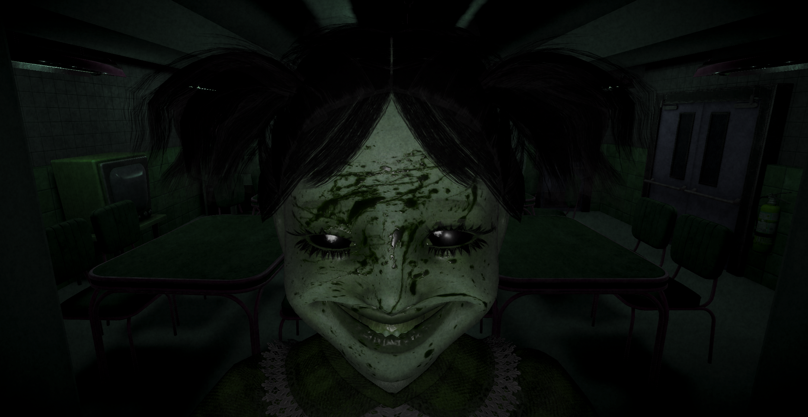
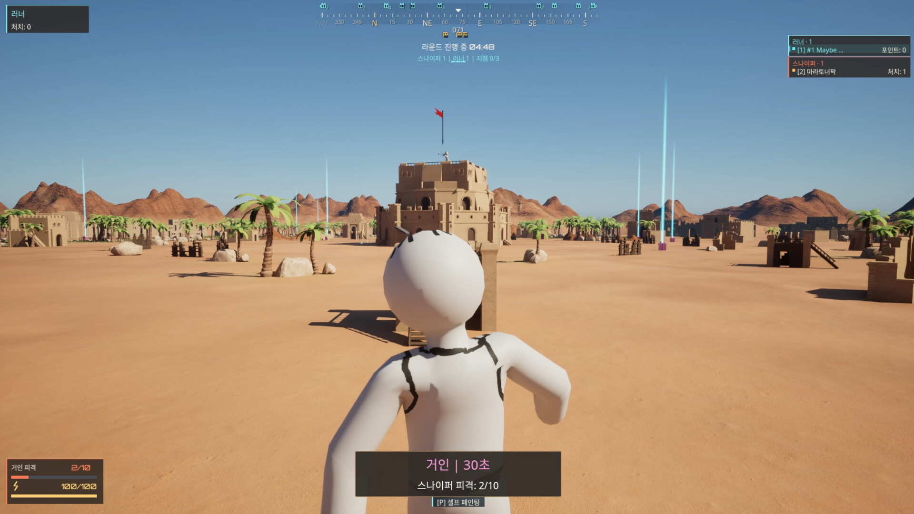

FEATURED GAME

달려라. 속여라. 끝까지 막아라.
총탄을 피해 목표를 달성하는 러너, 움직임을 읽어 저지하는 스나이퍼. 예측 불가능한 보급 능력과 직접 꾸민 캐릭터로 2–12인 비대칭 멀티플레이 추격전에 뛰어드세요.
- 2–12인 멀티플레이
- 러너 vs 스나이퍼
- Windows · Steam
2026.10.08 정식 출시 · 지금 플레이하세요
Maybe Hero 출시 예고편
지금 출시되었습니다. 친구들과 함께 당신만의 영웅이 되어보세요.
Stormy Games의 게임

MAYBE HERO
당신만의 방식으로 영웅이 되세요.
엄폐물 사이를 달리는 러너와 조준경 너머에서 기회를 기다리는 스나이퍼. 사막·베이스캠프에서는 거점을 확보하고, 미로에서는 탈출 열쇠와 처치 목표를 두고 경쟁합니다. 보급 상자와 한순간의 선택이 추격전의 흐름을 바꿉니다.

조준을 흔들고, 기회를 잡으세요
엄폐물을 활용하고 이동 타이밍을 바꿔 스나이퍼의 시선을 분산시키세요. 그래플링 후크로 빠르게 이동하거나 스톤맨으로 총탄을 견디며 목표에 접근하세요. 쓰러져도 재출격해 팀의 목표를 이어갈 수 있습니다.
다음 움직임을 읽으세요
달리는 러너를 쫓을지, 목표로 향하는 길목을 지킬지 선택하세요. 라이플과 저격총으로 저지하고, 보급 능력으로 모습과 움직임이 달라진 상대에게 정확한 사격과 빠른 판단으로 대응하세요.
직접 그린 모습으로 뛰어드세요
머리부터 몸통, 팔과 다리까지 직접 칠하세요. 나만의 색과 무늬, 친구들과 맞춘 디자인을 다른 플레이어에게 보여주며 추격전에 참여하세요.
보급 하나로 달라지는 플레이
작아지거나 거대해지고, 길쭉한 몸으로 달려보세요. 클론으로 혼란을 만들고 연막으로 시야를 가리거나 벽으로 새 엄폐물을 세우세요. 얻은 능력을 어디서, 어떻게 쓸지가 새로운 기회를 만듭니다.
세 가지 맵, 서로 다른 추격전
사막 — 탁 트인 공간의 돌파전
탑 위의 스나이퍼를 피해 활성화된 거점을 확보하세요. 러너 팀은 제한 시간 안에 모든 거점을 확보하면 승리하고, 스나이퍼 팀은 남은 거점을 끝까지 지켜야 합니다.
베이스캠프 — 엄폐물 사이의 기회
컨테이너와 시설물 사이를 이동하며 거점으로 향하세요. 사막과 같은 거점 확보 규칙에 다른 이동 경로와 시야가 더해집니다. 엄폐물에서 나올 순간과 보급 능력을 쓸 타이밍을 고르세요.
미로 — 벽을 넘어 열쇠를 찾아라
러너는 기본 슈퍼 점프로 이동하며 보급 상자의 탈출 열쇠를 모으고, 스나이퍼는 처치 목표를 채웁니다. 러너 팀은 시작 러너 수 × A개의 열쇠, 스나이퍼 팀은 시작 스나이퍼 수 × B회의 처치를 먼저 달성하면 승리합니다. 10분 안에 러너가 열쇠 목표를 달성하지 못하면 스나이퍼가 승리합니다.
THE SHIFT
아침이 올 때까지, 눈을 떼지 마세요.
보안 관제실의 야간 근무자가 되어 5개의 화면을 감시하세요. 실시간 영상 속 변화를 찾아내고, 아침이 올 때까지 살아남아야 합니다.
새로운 플레이, 기억에 남는 순간.